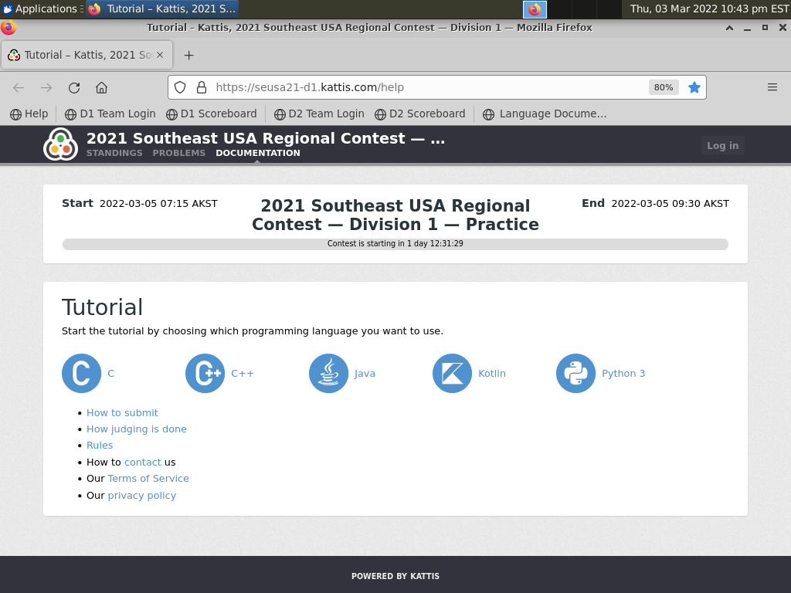
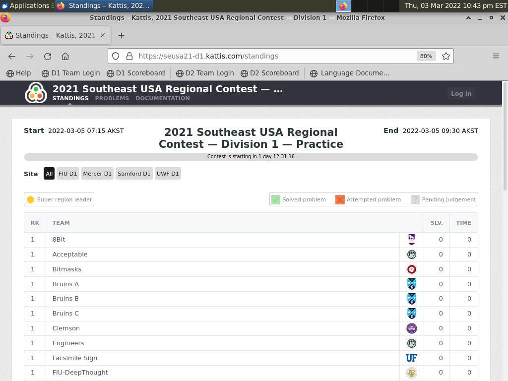

Once each system is configured, you will be sitting at a firefox screen with the kattis help showing. There are a few things we should do before teams enter the room and sit down.
Take note of the bookmarks toolbar, which is what teams will use to load their division login page or scoreboard

To make it easier for teams, you should click the link on each desktop for the appropriate division scoreboard page. This will show teams the scoreboard with a countdown clock to the start of the contest.
